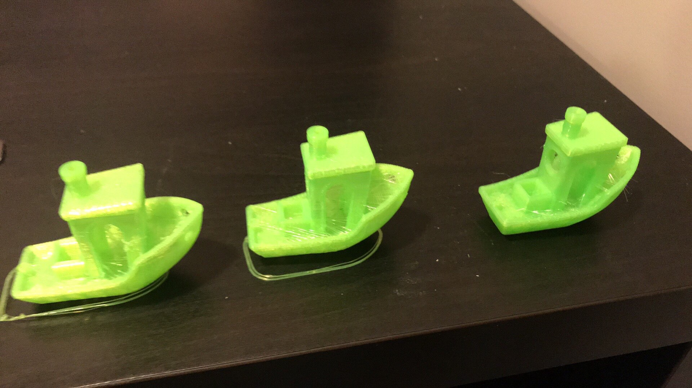

3D-printer v2
Den andre byggesett-printeren. Større ramme, bedre ekstruder, auto-bednivellering. Luksus den første printeren bare kunne drømme om. Bygd sammen med en venn over en kveld, så finjustert flere ganger enn jeg vil innrømme.

Hva som var nytt
- Auto-bednivellering. Den ene oppgraderingen som forandret alt sammenlignet med den første printeren. Den største kilden til mislykkede printer, borte.
- Større byggevolum. Forskjellen mellom "hva får plass i denne boksen" og "hva slags form vil du ha".
- Bedre mekaniske toleranser. Stivere ramme, kraftigere skinner. Mindre mekanisk støy på veien fra gcode til print.
- Fortsatt ingen innebygget slicer. Fortsatt mye oppsett på PC-en før et gitt filament oppførte seg.
Innjusteringsritualet
Jeg printet samme referansebåt (benchy) titalls ganger, hver gang med én variabel endret. Bildet jeg fortsatt har av rekken med litt-forskjellige benchyer er den ærligste oppsummeringen av hva printeren faktisk var: en treig, vakker, fysisk treningssløyfe. Justér. Print. Inspisér. Justér igjen. Det er den samme sløyfen som maskinlæring, bare med datapunkter som lukter brent PLA.
